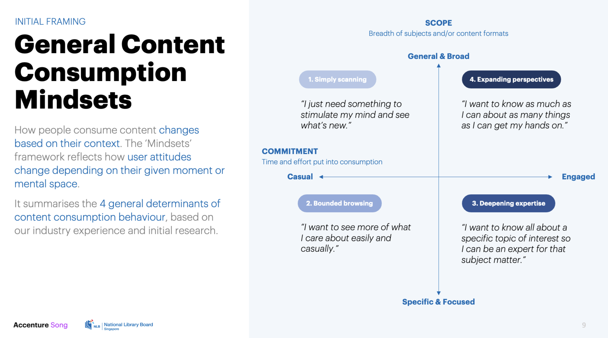
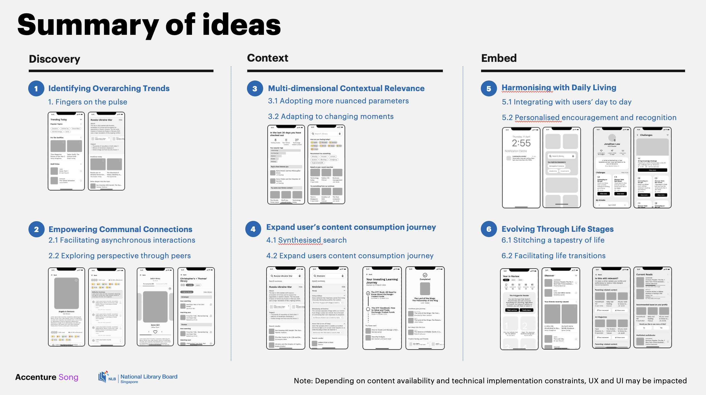
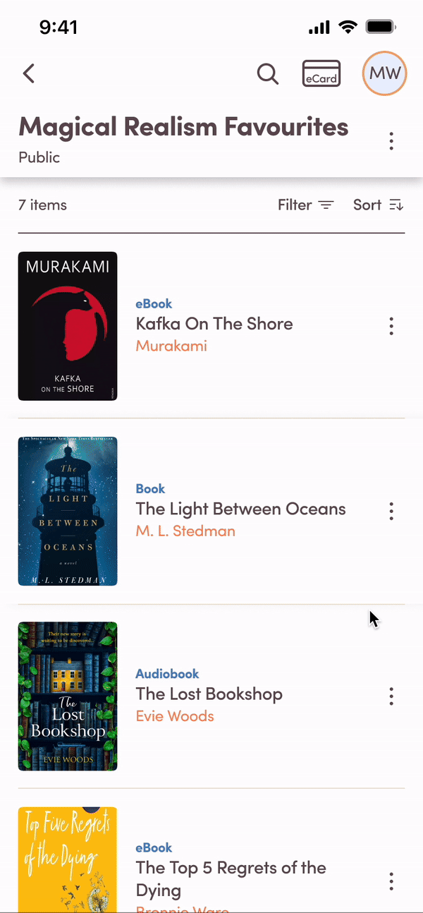
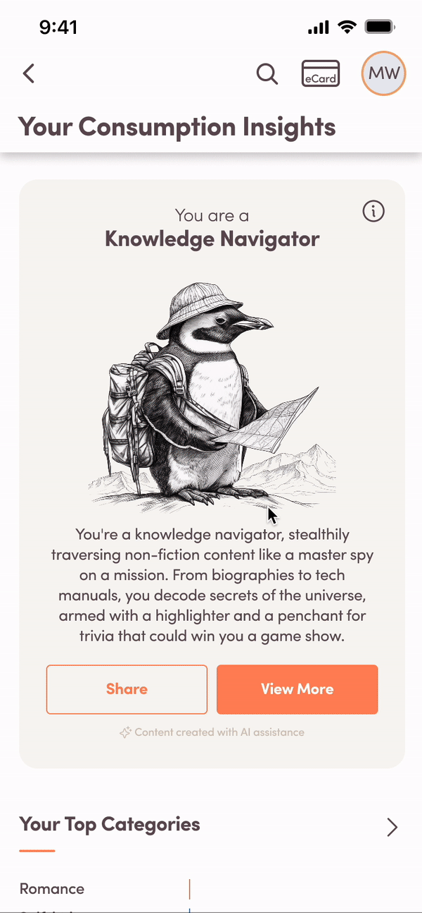

National Library Board (NLB)
My Role
I was a key interaction designer on this project, helping to bring the visual design directions to life using micro animations that the client could interact with.
Duration:
4 months
Responsibilities:
Idea Generation, UI/UX Design, User Research and Testing, High Fidelity Prototyping
The Project
An introduction of the client and our deliverablesHigh-Level Summary
The National Library Board (NLB) manages Singapore’s network of
public libraries and digital services. Accenture was engaged to
explore innovative ways to enhance content discovery and user
engagement within NLB’s mobile app.
As a core interaction designer on the project, I played a key role
in translating research insights into practical, testable design
concepts. My contributions helped the team uncover new engagement
opportunities and deliver a validated design direction that
informed NLB’s next phase of digital development.
Our Deliverables
Together with other designers and technical consultants, we had the following responsibilities:
My Contributions and Outcomes
As the lead interaction designer, I drove the design process and helped align the team around clear, testable concepts that informed the final recommendations.
- Discovery & Research: Conducted market and competitor analysis of NLB’s digital services and comparable apps. Synthesised findings into actionable insights that defined key opportunity areas and a shortlist of high-impact ideas.
- Concept Development & Testing: Designed and prototyped multiple interaction concepts across key user touchpoints. Facilitated usability testing that identified the most engaging ideas, directly influencing the concepts recommended to the client.
- Prototyping & Delivery: Created high-fidelity Figma prototypes that translated ideas into interactive experiences. This accelerated iteration cycles, improved cross-team alignment, and enabled stakeholders to make confident design decisions.
Overall, my contributions helped the team deliver a clear, user-validated design direction that strengthened client confidence and guided the next phase of product development.
Design Discovery
The initial research and synthesising our findingsUnderstanding User Mindsets
To start off, the team needed a better understanding of the consupmtion habits of the average Singaporean. Through user interviews and research, we could categorise the average content consumer into 4 main categories.
Brainstorming Ideas
With the user mindsets, we did market research of NLB's current work and other inspirations. This helped us to brainstorm novel ideas for user to discover content, across different mediums provided by NLB. We then narrowed down our ideas to several short listed ones, and applied it to the context of NLB through sketches
We also categorised and prioritised out list of ideas based on the client's needs and technical limitations, to help the client make more informed decisions on which ideas to proceed with.
Interaction Concepts and User Testing
Taking our initial ideas furtherInteraction Concepts
After getting the go-ahead from the client with out initial concepts, we now could further brainstorm and elaborate on the prioritised features. With each prioritised idea, we explored various different approaches to engage users at different touch points. I helped create the low fidelity wireframes which would be used in our user testing.
Visual Design Explorations and Testing
With the help of the visual designers, we also explored diverging visual directions based on different characteristics of the library, and the emotions we wish to invoke in the users. For the shortlisted directions, we also created working prototypes to get feedback from users.


Micro Animations
Maximising the features on FigmaThis project really allowed me to explore and experiment the variety of features available on Figma, especially smart animations and local variables. Below are some of my favourites!
Bouncy Bubbles

Swipe to Delete

Personality Quiz

Scrolling Progress Bar

Favourite Interaction

Chart Microanimation
